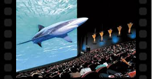
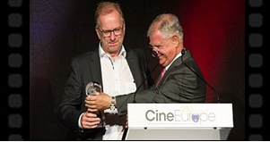

Održana 88. dodjela nagrada Oscar
Oscar za najbolju režiju sasvim očekivano je dospio je u ruke Alejandra G. Iñárritua za film "Povratnik" . Ovogodišnji najveći favorit bio je nominiran u čak 12 kategorija: najbolji film, režija, glavna muška uloga, sporedna muška uloga, fotografija, scenografija, montaža, zvuk, montaža zvuka, vizualni efekti, kostim i šminka.
U utrci za najbolju mušku ulogu našao se Leonardo DiCaprio, koji je zahvaljujući ulozi Hugha Glassa u “Povratniku“ osvojio prvog Oscara u svojoj karijeri. Može se reći da su sinoć na njega bili usmjereni svi pogledi, s obzirom na to da ljubitelji filma već godinama negoduju što slavni glumac nije dobio priznanje koje, prema njihovom mišljenju, itekako zaslužuje. Nagradu za najbolju žensku ulogu dobila je Brie Larsson za nastup u filmu "Soba". Larsson tumači majku petogodišnjeg sina koja sa svojim djetetom iz zatočeništva bježi u vanjski svijet.
Alicia Vikander dobila je Oscara za izvanredno izvedenu najbolju sporednu žensku ulogu u "Dankinji" . Švedska glumica u filmu tumači suprugu slikara Einara Wegenera koji promjenom spola postaje žena. Vikander ima veliki razlog za slavlje - glumici je ovo prva nominacija za Oscara, koja joj je donijela i prvu pobjedu. Nagradu za najbolju mušku sporednu ulogu dobio je Mark Rylance za film "Most špijuna" . I Rylance je ove godine prvi put nominiran za Oscara, što znači da je ujedno prvi put dobio nagradu o kojoj mnogi glumci sanjaju godinama.
Najveće iznenađenje večeri definitivno je bio "Pobješnjeli Max: Divlja cesta" (Mad Max: Fury Road), koji je briljirao u tehničkim kategorijama i "pokupio" sve "male" Oscare: nagradu za najbolji kostim, šminku, najbolju produkciju, montažu zvuka i miks zvuka. Nagrada za najbolje adaptirani scenarij pripala Adamu McKayju i Charlesu Randolphu za "Oklada stoljeća" (The Big Short), dok su Oscara za najbolji originalni scenarij dobili Tom McCarthy i Josh Singer za film “Spotlight”. Nagradu za fotografiju s pravom je osvojio "Povratnik" (The Revenant), a Oscar za najbolje filmske efekte dodijeljen je filmu "Ex Machina".
Sam Smith, koji je priznao da je pjesmu za film "Spectre" napisao za "dvadesetak minuta", dobitnik je Oscara za najbolju originalnu pjesmu za skladbu "Writing's On The Wall" . Prvi put u karijeri, legendarni Ennio Morricone je dobio nagradu za najbolju pjesmu i najbolju glazbu za "Mrska osmorka" (The Hateful Eight). Oscara za najbolji kratki animirani film osvojio je film “Bear Story”, dok je nagrada za najbolji dugometražni animirani film dodijeljena filmu "Izvrnuto obrnuto".
29. 02. 2016.................................................................................................................................................................................
Novosti u kinu
- Najnovije 4D iskustvo
Novo 4D iskustvo sa posebnim zvučnicima, nakvalitetnijom tehnologijom za mirisne efekte i specijalne efekte s vodom te stolice koje se pomiču ovisno o sadržaju filma zapanjiti će vas i vaše najmlađe. Uz sve to uključena je i 3D tehnologija. Saznajte više... - CineWatch proglašen najboljim kino prikazivačem u Europi
Nagrada „Kino prikazivač godine“ se jednom godišnje dodjeljuje prikazivaču koji je sa svojim rezultatima, rastom i pozicijom na tržištu doprinio pomicanju granica u industriji. Saznajte više...